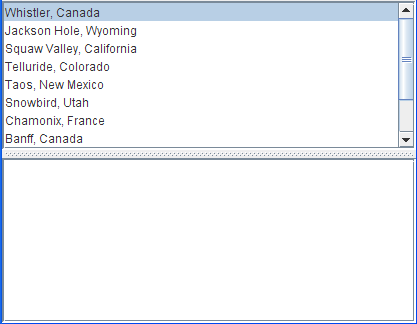

List data events occur when the contents of a mutable list change. Since the model — not the component — fires these events, you have to register a list data listener with the list model. If you haven't explicitly created a list with a mutable list model, then your list is immutable, and its model will not fire these events.
Note: Combo box models also fire list data events. However, you normally don't need to know about them unless you're creating a custom combo box model.The following example demonstrates list data events on a mutable list:
 You can find the demo's code in
Try this:
- Run ListDataEventDemo using JavaTM Web Start. Or, to compile and run the example yourself, consult the example index.
- Type in the name of your favorite ski resort and click the Add button. An
intervalAddedevent was fired.- Select a few continguous items in the list and click the Delete button. An
intervalRemovedevent was fired.- Select one item and move it up or down in the list with the arrow buttons. Two
contentsChangedevents are fired — one for the item that moved and one for the item that was displaced.ListDataEventDemo.java. Here's the code that registers a list data listener on the list model and implements the listener://...where member variables are declared... private DefaultListModel listModel; ... //Create and populate the list model listModel = new DefaultListModel(); ... listModel.addListDataListener(new MyListDataListener()); class MyListDataListener implements ListDataListener { public void contentsChanged(ListDataEvent e) { log.append("contentsChanged: " + e.getIndex0() + ", " + e.getIndex1() + newline); } public void intervalAdded(ListDataEvent e) { log.append("intervalAdded: " + e.getIndex0() + ", " + e.getIndex1() + newline); } public void intervalRemoved(ListDataEvent e) { log.append("intervalRemoved: " + e.getIndex0() + ", " + e.getIndex1() + newline); } }
The ListDataListener Interface
ListDataListenerhas no corresponding adapter class.
Method Purpose intervalAdded(ListDataEvent) Called when one or more items have been added to the list. intervalRemoved(ListDataEvent) Called when one or more items have been removed from the list. contentsChanged(ListDataEvent) Called when the contents of one or more items in the list have changed.
Method Purpose Object getSource()
(injava.util.EventObject)Return the object that fired the event. int getIndex0() Return the index of the first item whose value has changed. int getIndex1() Return the index of the last item whose value has changed. int getType() Return the event type. The possible values are: CONTENTS_CHANGED,INTERVAL_ADDED, orINTERVAL_REMOVED.
The following table lists the examples that use list data listeners.
Example Where Described Notes ListDataEventDemoThis section Reports all list data events that occur on a list.